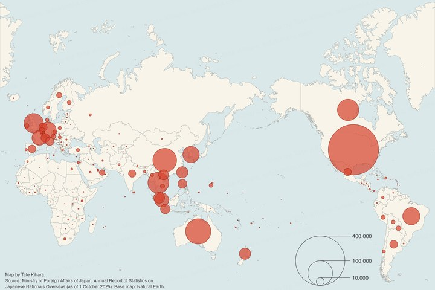
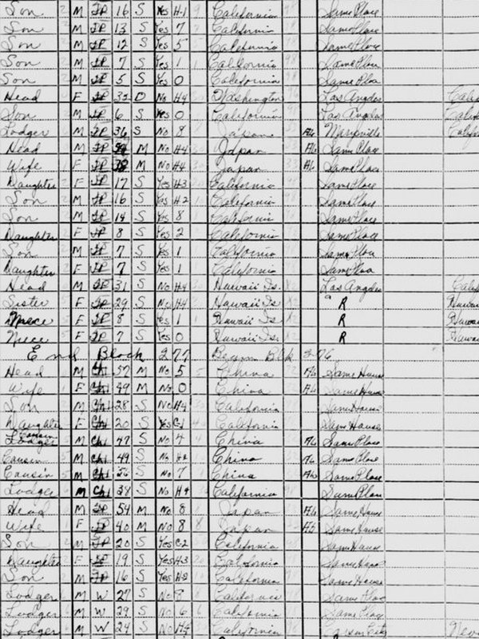
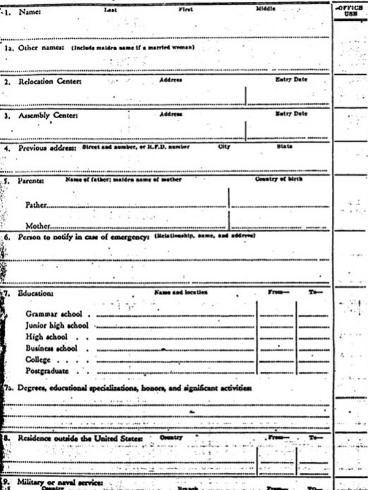
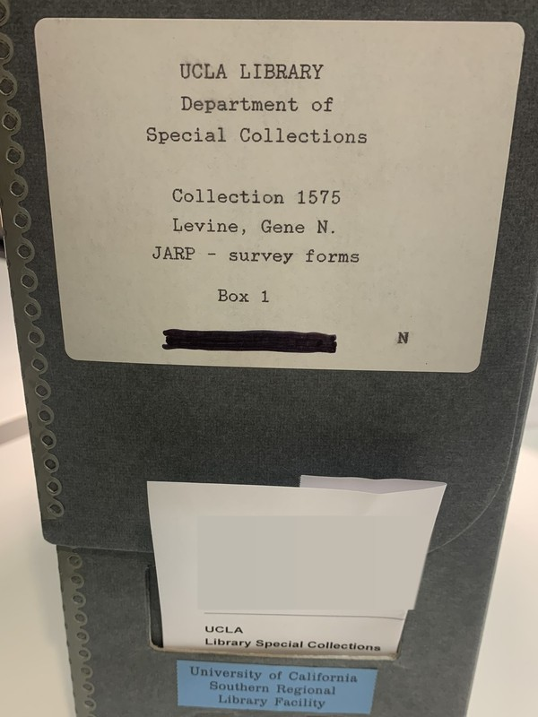

Research

My research asks how the movement of people across national borders is entangled with social stratification and inequality: how many people moved, from where to where, and who they were; where they stood in the society they left; and where they and their children ended up in the one they joined. In recent years in particular, my work has covered both people who leave Japan and people who come to it, from the Japanese who moved to the United States in the late nineteenth and early twentieth centuries to Japanese living abroad and immigrants living in Japan today.
Click an image to enlarge.



In both maps the area of each circle is proportional to the number of residents, and the 2025 map is drawn to roughly the same scale as the 1922 map. Hawaii has its own circle in 1922 and is counted in the United States in 2025. The 1922 map is the plate “Japanese from Japan proper living abroad” (30 June 1922) in the yearbook compiled by the Cabinet Bureau of Statistics. The 2025 figures are as of 1 October 2025, and the map data are from Natural Earth.
I approach these questions with the tools of historical and social demography and analyze data within interpretive frameworks that are meaningful for the social sciences. Much of the work consists of assembling population data of different kinds, assessing their representativeness, and harmonizing them, and sometimes of producing them. For my historical research, this means administrative records, such as the individual records of the War Relocation Authority (WRA), which incarcerated Japanese Americans during World War II, and U.S. census records from the first half of the twentieth century, linked across years and sometimes across sources to follow individuals and their families over time.
Click an image to enlarge.






Census records from 1920 to 1940, linked so that the same people can be followed over time, are the data for my article in Social Science Research. Records made with the form of the War Relocation Authority, which incarcerated Japanese Americans during World War II, are the source for my article in the Journal of Ethnic and Migration Studies, and the JARP survey is the data source for my article in Demography.
Notes
The census page includes Japanese American households (“Jp” in the race column); names are masked in the full page. The U.S. government releases census records to the public 72 years after each census, and as a record of the federal government the page is in the public domain. The individual record form is Form WRA-26. The Japanese American Research Project (JARP) surveyed Japanese immigrants and their descendants in the continental United States in the 1960s. The box shown is labeled “Collection 1575, Levine, Gene N., JARP - survey forms, Box 1”; the printed details on the request slip attached to it are masked. I visited the archive to check some coding practices that are not documented in the data files available online.
For contemporary research, I use archived social survey microdata, and I have also taken part in conducting surveys: as a member of the research group for the 2025 SSM Survey I work on its survey of foreign residents, and in another collaborative survey in the Tokyo metropolitan area I have carried out qualitative follow-up interviews with respondents to its quantitative survey. My current research, supported in part by a JSPS Grant-in-Aid for Early-Career Scientists (FY2026–2029), extends my historical work, which began with the Japanese who settled in the continental United States, to people from Japan who settled in other countries, and pursues the same questions among immigrants in Japan today.
My publications are listed on the Publications page.
研究の軸にあるのは，国境を越える人の移動が社会階層（学歴・職業・収入・資産などの格差が持続する社会の構造）とどう結びついているのか，という問いです．どれだけの人が，どこからどこへ動き，それはどのような人々なのか．出身社会の階層のどこから来て，移動先で本人と子どもはどのような地位に就くのか．近年は特に，この問いを，日本から出ていく人々と日本に来る人々の双方について検討しています．前者は，明治・大正期に米国へ渡った日本人移民と，現在海外で暮らす日本人です．後者は，現在日本で暮らす外国人移民です．
画像をクリックすると拡大します．
2枚とも円の面積は在留者数に比例し，2025年の図は1922年の図とほぼ同じ縮尺で描いてあります．ハワイは，1922年の図では独立した円で示され，2025年の図では米国に含まれます．1922年の図は「海外在留内地人（大正十一年六月三十日）」と題した図版です．2025年の図は2025年10月1日現在の人数で，地図データは Natural Earth によります．
研究方法としては，計量社会学と歴史・社会人口学のアプローチを採用しています．種類の異なる人口データを集め，対象とする人々を偏りなく捉えているか（代表性）を検討し，互いに比較できる形に整え，時には自ら調査してデータを作ったうえで，社会科学的に意味のある解釈枠組みのもとで分析しています．例えば，歴史上の移民については，第二次世界大戦中に日系人を収容した戦時転住局の個人記録などの行政記録や，20世紀前半の米国の国勢調査の個票を用いています．こうした記録は調査の年や資料ごとに別々に作られており，名前の綴りの違いや年齢のずれ，転記の誤りも多く含まれています．そこで，氏名，出生地，年齢を手がかりに，発音を基に名前の綴りを揃える方法や機械学習によって同じ人物の記録を結びつけたデータを用い，一人ひとりの人生の歩みや家族を追えるようにしています．
画像をクリックすると拡大します．
1920年から1940年の国勢調査の個票を連結し，同じ人物を追えるようにしたパネルデータが，Social Science Research 掲載論文の資料です．第二次世界大戦中に日系人を収容した戦時転住局（War Relocation Authority）がこの様式で作った記録が Journal of Ethnic and Migration Studies 掲載論文の資料であり，JARP のデータが Demography 掲載論文の資料です．
注
国勢調査の個票はカリフォルニア州サクラメントのもので，日系人の世帯が含まれます（人種欄の「Jp」）．全体画像では氏名を伏せました．米国政府は国勢調査の個票を調査の72年後に公開しており，この個票は連邦政府の記録であり，パブリックドメインです．個人記録の様式は Form WRA-26 です．Japanese American Research Project（JARP）は，1960年代に米国本土の日系移民とその子孫を対象に行われた社会調査です．写真の箱のラベルには「Collection 1575, Levine, Gene N., JARP - survey forms, Box 1」とあります．箱に差し込まれた請求票の記載は伏せました．オンラインで公開されているデータファイルには，コーディングの方法が文書に残されていない箇所があり，その一部を確かめるためにこの資料を閲覧しました．
現代の移民についてはアーカイブされた社会調査データの個票を用いるだけでなく，社会調査の実施にも加わってきました．2025年SSM調査では研究会メンバーとして外国籍住民調査に携わり，首都圏の別の共同調査では，量的調査に回答した人に後日あらためて話を聞くインタビュー調査も担ってきました．現在は科研費若手研究（2026〜2029年度）などにより，米国を中心とした研究をより多様な国・地域に広げるとともに，同じ問いを現代の日本で暮らす移民についても検討しています．
業績は Publications のページにまとめています．